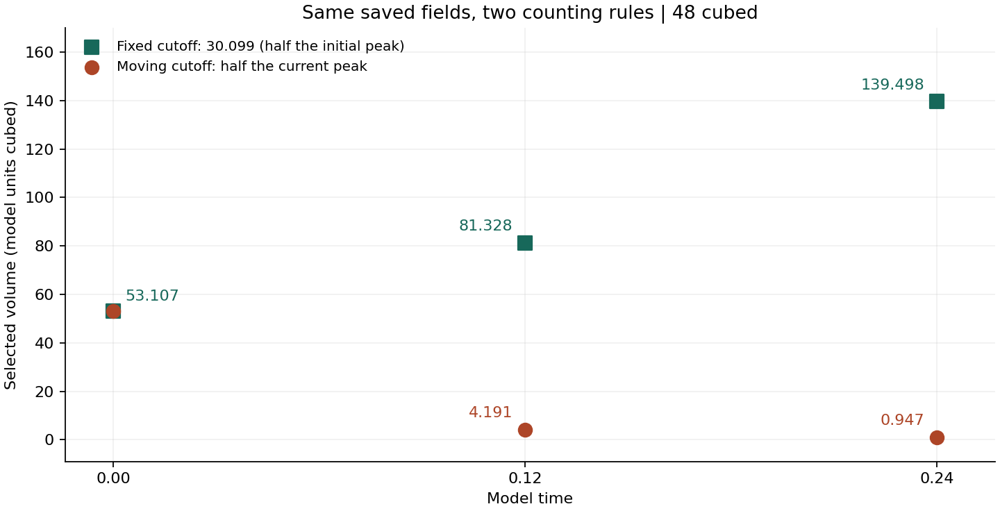
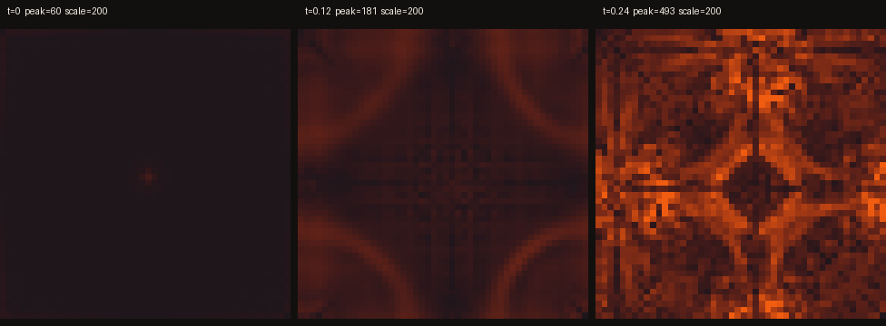

Published review · 8 October 2026 · existing uploads
Flow results and numerical controls
The simulations record decay in some configurations and spin amplification that remains above its starting value through the sampled matched-stretch interval. Resolution dependence and incomplete numerical controls prevent a conclusion about singularity or global regularity.
At each grid size, the projected initial field is represented by a finite Fourier sum and is smooth as a periodic interpolant. A common smooth continuum initial field across the refined grids has not been established here. Amplification over the recorded interval does not mean monotone growth: the peak rises and falls.
Measurement definitions
Use the same quantity and units throughout
Values use the model’s length and time units; no conversion to metres or seconds is supplied. N denotes grid resolution. A grid maximum W_N approximates the continuous maximum W; they are not interchangeable in a regularity argument.
| Term | Definition / norm | Dimensions |
|---|---|---|
| Speed | U_N(t) = max over grid points of |u_N|; Euclidean velocity magnitude. | Length / time |
| Biggest spin / peak vorticity | W_N(t) = max over grid points of |curl_N u_N|. curl_N uses the solver’s Fourier derivatives. The continuous quantity is W(t) = ||curl u||∞. | 1 / time |
| RMS spin | ω_rms,N = sqrt(mean over all cells of |curl_N u_N|²). Earlier files call this average; it is RMS, not the arithmetic mean. | 1 / time |
| Spin ratio | R_N = W_N / ω_rms,N when the denominator is nonzero. Includes every cell in the reference. | Dimensionless |
| Half-peak region | Grid cells where |curl_N u_N| ≥ W_N/2; its threshold changes at each observation. | Region; volume in length³ |
| Fixed-cutoff region | Grid cells where |curl_N u_N| ≥ c, with c held fixed. Here c = 30.0991756, 50, 100; extra supplied claims at 200 and 400 are also recounted. | c in 1/time; volume in length³ |
| Hot region | Informal wording only. A result must specify the half-peak or numerical fixed cutoff before a region size is compared. | No separate measurement |
| Reported width | ℓ_eq = (selected cell count × dx³)^(1/3). ℓ_eq/dx is an equivalent cube side in cells; it is not the narrowest thickness or a connectivity test. | Length; or cells |
| Accumulated maximum spin | I_N(T) ≈ integral from 0 to T of W_N(t) dt. The 119.9026 value uses trapezoids between 14 saved, rounded sample times. | Dimensionless |
| Kinetic energy | E_N = ½ dx³ Σ |u_N|², per unit density over the box. Also report E_N/E_N(0). | Length⁵ / time²; ratio dimensionless |
| Incompressibility error | D_N = max over grid points of |div_N u_N| using the same spectral derivative. Scaled error = dx D_N / U_N. | 1/time; scaled error dimensionless |
In older files, the key “peak” can mean maximum speed. “Biggest” in the spin tables means maximum vorticity magnitude. The results below name the quantity explicitly.
Numerical method and control status
What is specified, measured and missing
∂t u + (u · ∇)u = −∇p + ν Δu; ∇ · u = 0; external force = 0.
| Control | Evidence status | Details |
|---|---|---|
| Equation and domain | Inspected in code | Unforced periodic incompressible Navier–Stokes on a cube of side 6. Pressure is implemented by Fourier projection. |
| Initial conditions | Inspected in code; time-zero arrays matched | grids_compared.build uses the direct matched stretch plus a tight tube, then projection. It does not use the separate gated ring constructor. |
| Viscosity across grid study | Same in supplied producer | grids_compared.py sets ν = 0.001 for 48³, 64³ and 80³. The imported clay_hug.py default 0.01 is overridden. Separate fading configurations use other viscosities. |
| Spatial discretization | Inspected in code | Fourier collocation; spectral differentiation, nonlinear products on the physical grid, rectangular mode filter and pressure projection. Retains |m_j| ≤ floor(N/3). No padding is used. |
| Aliasing at the filter edge | Not eliminated by a complete audit | The cutoff includes the N/3 endpoint when N is divisible by 3 (including 48). This should not be described as guaranteed full 2/3 dealiasing; endpoint interactions can alias into retained modes. |
| Time integration | Inspected in code | Explicit two-stage Heun step, followed by projection. Fixed dt from the initial speed, adjusted to land at the requested endpoint; it is not an adaptive CFL controller. |
| Time-step refinement | New reported dt versus dt/2 summary through 0.16 | timestep-half.json records exactly halved dt and matching printed times. The final peak difference is 0.001915%; the largest saved difference is 0.002977%. The producing schedule, viscosity and full arrays are not supplied, so this is a checked summary rather than a reproduced run. |
| Incompressibility | Measured on three supplied 48³ fields | D_N and its scaled value appear below. A projection in code is not a substitute for recording its numerical residual. Later 64³/80³ full fields were not supplied for this recount. |
| Energy | Measured on three supplied 48³ fields; budget-48.json independently recounted | Snapshot energy and enstrophy match the supplied arrays. E_N decreases. The budget file contains no integrated viscous loss or balance residual, so the full energy budget remains unverified. |
| Saved-field provenance | Initial identity checked; evolution schedule incomplete | The t = 0 field matches the supplied matched constructor. The NPZ files record t and dx but not dt or ν; the exact producing schedule through t = 0.24 is not established. The t = 0.36 integral is a separate supplied series. |
| Longer finer-grid coverage | New 64³ summary through t = 0.24 | finer-longer.json supplies 10 finite peak samples and matches the earlier 64³ initial peak. It contains no dt, viscosity, restart record or full fields. It supersedes the earlier statement that no 64³ data beyond 0.16 are available. |
| Resolution and replication | New 32³ finite-difference summary; method agreement incomplete | fd-check.json supplies an increasing peak through 0.12. It omits the stencil, viscosity, dt and initial arrays, and no same-grid Fourier counterpart is supplied. A reported alternative method is now available; controlled agreement remains unestablished. Historical 256³/384³ tests use another start. |
Grid-study schedules prescribed by the supplied producer
| Grid | dx | ν | dt | Steps | End time |
|---|---|---|---|---|---|
| 48³ | 0.12500 | 0.001 | 0.0001297859 | 1541 | 0.20 |
| 64³ | 0.09375 | 0.001 | 0.0000975015 | 1641 | 0.16 |
| 80³ | 0.07500 | 0.001 | 0.0000780742 | 1537 | 0.12 |
dt starts from 0.04 dx / U_N(0), then is adjusted by an integer step count. These schedules belong to grids_compared.py. They are not inferred schedules for every earlier matched-* table or for the three supplied NPZ snapshots.
New aligned / reverse / exodus study: live saved progress and explicit settings. That study uses newly specified initial fields; its runs are not repetitions of the imported matched-stretch example.
Sources: grid producer · numerical step · source hashes and schedules
Results · recorded outcomes and direct recounts
Observed values
Decay and amplification in different starting configurations
| Saved series | First W_N | Largest saved W_N | Last W_N | End time |
|---|---|---|---|---|
| Pulled tube: spin-ratio.json | 71.688 | 71.688 | 29.304 | 2.0 |
| Matched stretch: matched-nostop.json | 60.198 | 611.139 at t=0.3239 | 513.808 | 0.35 |
The matched-stretch series reaches its largest saved value at t = 0.3239 and ends at 513.808. Several intervening values fall. These are distinct starting configurations and finite recorded intervals.
Sources: pulled-tube spin · matched-stretch spin
New 64³ series through time 0.24
The newly supplied finer-longer.json reports W_N increasing from 59.280 to 701.797 across all 10 saved samples. The last value is 42.43% above the supplied 48³ snapshot value of 492.733 at nominal time 0.24.
All ten finer-grid observations
| Recorded time | Grid | W_N |
|---|---|---|
| 0.0 | 64³ | 59.279954 |
| 0.0299 | 64³ | 76.575994 |
| 0.0599 | 64³ | 91.599357 |
| 0.0898 | 64³ | 137.977796 |
| 0.1198 | 64³ | 200.090315 |
| 0.1497 | 64³ | 312.859046 |
| 0.1797 | 64³ | 445.066139 |
| 0.2096 | 64³ | 576.240981 |
| 0.2396 | 64³ | 697.609578 |
| 0.24 | 64³ | 701.797043 |
This compares reported observations at nominally matching times. The new file omits the producing dt and viscosity, so it does not provide a controlled isolation of grid error. Its initial peak matches the earlier 64³ start; that scalar match alone does not establish the full starting field or a checkpoint continuation.
Source: new finer-grid table.
Grid comparison, with observation times retained
| Source / grid | Recorded time | W_N | Equivalent-volume width / dx |
|---|---|---|---|
| Saved full field / 48³ | 0.12 (NPZ time) | 180.952 | 12.899 |
| Grid-study table / 48³ | 0.1246 | 194.484 | 11.771 |
| Grid-study table / 64³ | 0.1199 | 200.446 | 15.229 |
| Grid-study table / 80³ | 0.1199 | 234.162 | 15.428 |
The 64³ and 80³ values at printed time 0.1199 differ by 16.82% relative to 64³. The 48³ value near 194 belongs to t = 0.1246. The supplied 48³ field at t = 0.12 instead has W_N = 180.952.
Sources: grid-study table · saved-field recount
Same saved fields, fixed and moving cutoffs
| Time | W_N | Moving cutoff | Half-peak cells | Cells ≥ 50 | Cells ≥ 100 | Cells ≥ 200 | Cells ≥ 400 |
|---|---|---|---|---|---|---|---|
| 0.00 | 60.198 | 30.099 | 27191 | 930 | 0 | 0 | 0 |
| 0.12 | 180.952 | 90.476 | 2146 | 15815 | 1210 | 0 | 0 |
| 0.24 | 492.733 | 246.366 | 485 | 40524 | 11013 | 1342 | 11 |
Selected volumes
| Time | Volume ≥ initial half-peak | Volume ≥ current half-peak | Volume ≥ 50 | Volume ≥ 100 |
|---|---|---|---|---|
| 0.00 | 53.107422 | 53.107422 | 1.816406 | 0.000000 |
| 0.12 | 81.328125 | 4.191406 | 30.888672 | 2.363281 |
| 0.24 | 139.498047 | 0.947266 | 79.148438 | 21.509766 |

Only the three supplied snapshots are plotted. Cutoffs 50 and 100 match fixed-cutoff.json exactly; the newly supplied report’s counts at 200 and 400 also match direct recounts.
Incompressibility and energy in the supplied 48³ fields
| Time | Max speed U_N | Energy E_N | E_N / E_N(0) | Max |div_N u| | dx × error / U_N |
|---|---|---|---|---|---|
| 0.00 | 38.517098 | 18126.757349 | 1.00000000 | 1.243e-13 | 4.035e-16 |
| 0.12 | 35.520684 | 18105.441977 | 0.99882409 | 1.172e-13 | 4.126e-16 |
| 0.24 | 39.179048 | 18041.823051 | 0.99531442 | 1.137e-13 | 3.627e-16 |
Energy falls by 0.4686% from t = 0 to 0.24 across these observations. All saved velocity and spin values are finite. Recomputing spin from velocity agrees to within 3.5 × 10⁻¹³.
New timestep comparison
| Setting | dt | W_N at 0.16 | I_N at 0.16 |
|---|---|---|---|
| Base | 0.000129764801298 | 288.471151171 | 20.913804679 |
| Half | 6.48824006488e-05 | 288.476676297 | 20.913787195 |
The endpoint peaks differ by 0.001915%. The largest difference among the ten saved pairs is 0.002977%. This is close agreement within the supplied summaries. The recorded width/cell ratios imply dx = 0.125; the JSON does not explicitly record N, viscosity, or complete producing code.
Timestep data · Upload verification
New budget, threshold, reverse and finite-difference files
All snapshot energy and enstrophy values in budget-48.json match direct calculations from the three saved fields. Every count and volume in ladder-48.json also matches, including fixed levels 50, 100, 200, 400 and 600, and relative levels 25%, 50% and 75%.
fd-check.json reports a 32³ peak from 50.493 to 196.140 by time 0.12. The method is labelled finite-difference advection; a controlled Fourier/FD comparison cannot be reconstructed from that label and the peak table alone.
reverse-status.json reports a start of 55.077, a largest saved peak of 79.825 at 0.1317, and a final value of 57.790 at 0.40. All its reported stretchRate values are positive. Its construction and the location/definition of that measurement are unspecified; its filename alone does not verify background compression.
Snapshot budget · Threshold counts · FD summary · Reverse summary
Accumulated maximum spin
The 14 saved time-and-peak pairs in spin-bound.json match width-longer.json. Trapezoidal integration using those rounded times reproduces every cumulative value, including I_N(0.36) = 119.9026437600029.
Diagnostics and report record · original count verification · integral series
Interpretation · what the observations support
Conclusions and limits
- Amplification
- The matched-stretch peak remains above its initial value over the saved positive-time samples through 0.35. This supports amplification over that observed interval, with rises and falls; indefinite growth is not established.
- Grid dependence
- The peak has not been shown to converge. The 64³/80³ difference, coupled dt changes and unequal observation times prevent attributing the entire difference to spatial refinement or calling the peak a resolved physical feature.
- Cutoff dependence
- A smaller half-peak region occurs while more volume exceeds each tested fixed cutoff. At t = 0.24, changing only the cutoff on the same field changes the selected volume from 139.498 to 0.947. This identifies a measurement effect, not a force causing the flow.
- Region thickness
- The cube root of selected volume does not determine minimum thickness. Multiple sheets, filaments or disconnected cells can have the same total volume. A value above one cell therefore does not rule out an unresolved thin feature.
- Energy and divergence
- The three snapshots have small spectral divergence residuals and decreasing energy. These checks support those properties of the saved arrays; they do not establish peak convergence, the full energy balance, or resolution of the flow between snapshots.
- Finite integral
- 119.9026 is a reproduced numerical quadrature. Applying the smoothness criterion would require a bound on the continuous spatial supremum throughout the interval. The finite sampled sum supplies no such error-controlled bound. Continuation criterion, Theorem 6.10.
The time 0.0166 is not a predicted breakdown time
It is approximately 1/W_N(0). For the illustrative inequality dW/dt ≤ W², the comparison bound W(0)/(1 − W(0)t) is finite only before 1/W(0). The bound becoming infinite does not require W itself to become infinite. Passing that time therefore does not invalidate the inequality, establish regularity or rule out later breakdown. Moreover, the supplied files do not establish dW/dt ≤ W² with unit coefficient for this Navier–Stokes construction.
No conclusion about singularity or global regularity follows from the finite runs reported here.
Source versions and report corrections
Latest package review
hug-github (2).zip contains 39 files unchanged from hug-github (1).zip and four new JSON files: timestep-half, finer-longer, reverse-status and ladder-48. The finer-longer and reverse-status data duplicate the earlier standalone uploads. The two later standalone uploads, budget-48.json and fd-check.json, are also included above. Unchanged files were not rerun.
This revision corrects claims in the earlier PDFs about the finite grid integral, equivalent-volume width and time 0.0166, and records the newly available controls with their source limits.
Images and source documents
The original slice image scales each panel to its own peak. The additional image labels a shared scale of 200. The pixels are supplied; their rendering code is not included.

Uploaded matched report · Uploaded missing-bound note · Latest archive comparison · Earlier source wording review
Original uploads are preserved. The current page records the revisions.
Cross-project context
Connections to the wider work
The following entries preserve the earlier exploration of comparison references, language and clustering. Each gives its own evidence and interpretation.
Arithmetic link · four earlier flow tables
1. A weaker peak can stand out more
- What changed
- Peak spin and whole-flow RMS both change between saved observations.
- Comparison reference
- The ratio compares peak spin with the recorded whole-flow RMS.
- Traceable influence
- Dividing by a faster-falling RMS raises the ratio even when the peak falls.
- Result
- Of 19 ratio-increasing intervals, 7 have a falling peak. Another 7 have a rising peak and falling or unchanged RMS; 5 have both rising, with the peak rising faster.
These are 49 intervals in four saved tables, not independent experimental replications. RMS includes the strongest-spin region. The arithmetic explains the ratio change; it does not establish what physically caused either input to change.
Inspect the 19 increasing-ratio intervals
| File | Time | Peak | RMS | Ratio | Link |
|---|---|---|---|---|---|
| spin-ratio-64.json | 0.0 → 0.1313 | -3.94% | -4.74% | +0.85% | Both fall; whole-flow RMS falls faster. |
| spin-ratio-64.json | 0.1313 → 0.2625 | -3.59% | -4.31% | +0.75% | Both fall; whole-flow RMS falls faster. |
| spin-ratio-64.json | 0.525 → 0.6562 | +2.63% | -2.55% | +5.32% | The peak rises while whole-flow RMS falls or holds. |
| spin-ratio-64.json | 0.7875 → 0.9188 | -0.59% | -2.59% | +2.06% | Both fall; whole-flow RMS falls faster. |
| spin-ratio-64.json | 0.9188 → 1.05 | -0.90% | -1.60% | +0.71% | Both fall; whole-flow RMS falls faster. |
| spin-ratio-64.json | 1.3125 → 1.4438 | -0.49% | -0.52% | +0.03% | Both fall; whole-flow RMS falls faster. |
| spin-ratio-64.json | 1.4438 → 1.575 | +10.37% | -0.57% | +11.01% | The peak rises while whole-flow RMS falls or holds. |
| ratio-rose.json | 0.0 → 0.0395 | -1.19% | -1.20% | +0.01% | Both fall; whole-flow RMS falls faster. |
| ratio-rose.json | 0.0791 → 0.1186 | +1.27% | -1.01% | +2.30% | The peak rises while whole-flow RMS falls or holds. |
| ratio-rose.json | 0.1186 → 0.1582 | +2.54% | -0.94% | +3.52% | The peak rises while whole-flow RMS falls or holds. |
| ratio-rose.json | 0.1582 → 0.1977 | -0.38% | -0.87% | +0.49% | Both fall; whole-flow RMS falls faster. |
| ratio-rose.json | 0.2372 → 0.2768 | +0.68% | +0.56% | +0.12% | Both rise; the peak rises faster. |
| ratio-rose.json | 0.2768 → 0.3163 | +5.65% | +4.43% | +1.16% | Both rise; the peak rises faster. |
| spin-ratio.json | 0.6573 → 0.8216 | +20.11% | -1.62% | +22.09% | The peak rises while whole-flow RMS falls or holds. |
| spin-ratio.json | 1.1503 → 1.3146 | +8.52% | -0.91% | +9.51% | The peak rises while whole-flow RMS falls or holds. |
| spin-ratio.json | 1.6433 → 1.8076 | +5.16% | +0.13% | +5.03% | Both rise; the peak rises faster. |
| spin-ratio.json | 1.9719 → 2.0 | +2.17% | -0.42% | +2.60% | The peak rises while whole-flow RMS falls or holds. |
| spin-ratio-low-nu.json | 0.6667 → 0.75 | +35.92% | +1.46% | +33.96% | Both rise; the peak rises faster. |
| spin-ratio-low-nu.json | 0.8333 → 0.9167 | +3.60% | +1.21% | +2.36% | Both rise; the peak rises faster. |
Sources: spin-ratio-64.json · ratio-rose.json · spin-ratio.json · spin-ratio-low-nu.json
Two saved extrema · ratio-rose.json
2. Most prominent and strongest occur at different times
- What changed
- Highest ratio: 32.201 at time 0.1977. Highest spin: 250.812 at time 0.3163.
- Comparison reference
- Between those observations, whole-flow RMS rises 4.40%.
- Traceable influence
- The reference rises faster than the peak, which rises 3.87%.
- Result
- The later observation has a stronger peak but a 0.51% lower ratio.
This compares the two saved extrema. Values also rise and fall between them.
Source: ratio-rose.json
Saved representation comparison · K=3, seed=0
3. Three replies account for all changed pair relationships
- What changed
- The same 68 recorded replies are represented as raw counts and as counts per 100 words; features are standardized separately in each representation.
- Comparison reference
- The numerical features supplied to clustering change. The underlying replies and recorded count table remain the same.
- Traceable influence
- Every changed pair involves exactly one of replies 24, 48 or 50. Each loses 60 former group relationships and gains 3.
- Result
- All 189 changed pair relationships are accounted for. Pairwise grouping among the other 65 replies is unchanged.
This compares who shares a group, so renaming group numbers cannot create a change. Length adjustment and the resulting rescaling act together in this saved comparison.
Sources: saved assignments · study method
Explicit reuse in the text · conversation source 03
4. Earlier wording enters a later interpretation
- What changed
- The complete comparison request at lines 1898 and 2210 is identical.
- Comparison reference
- The first occurrence follows variables and thresholds; the second follows discussion of skin and the middle.
- Traceable influence
- The second answer explicitly says it will apply the new skin-versus-middle definition.
- Result
- The first answer calls the sentences a cause-and-effect engine; the second assigns outer-layer and inner-process roles. The user then rejects the skin framing.
“apply your new definition of the skin vs. counting the middle”
The text establishes use of that earlier framing. It does not isolate all causes of the answer difference.
Sources: first request, line 1898 · repeated request, line 2210 · explicit reuse, line 2211 · context reading
Connections to explore across the project
Keep both the item and its reference in view
The flow tables and the language studies each show why a relative description needs its comparison context alongside it. The clustering example adds a scale question: a change in only three replies accounts for the change in the whole-table comparison.
Your A/B/C notes ask how difference, context and action affect an interpretation. These records offer a way to keep those questions inspectable: preserve the original observation, identify the reference being used, and show the path to the resulting description.
These are exploratory connections across modules. The entries above identify the distinct evidence for each link.